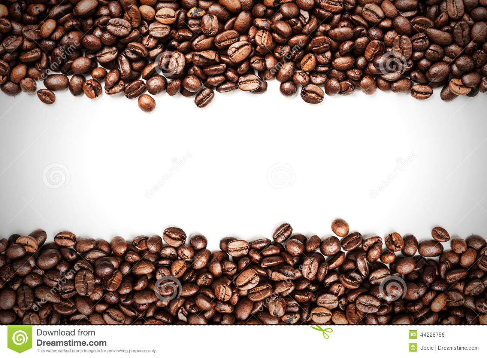

Coffee is a brewed drink prepared from roasted coffee beans, which are the seeds of berries from the Coffea plant. The genus Coffea is native to tropical Africa, and Madagascar, the Comoros, Mauritius and Réunion in the Indian Ocean.[2] The plant was exported from Africa to countries around the world and coffee plants are now cultivated in over 70 countries, primarily in the equatorial regions of the Americas, Southeast Asia, India, and Africa. The two most commonly grown are the highly regarded arabica, and the less sophisticated but stronger and more hardy robusta. Once ripe, coffee berries are picked, processed, and dried. Dried coffee seeds (referred to as beans) are roasted to varying degrees, depending on the desired flavor. Roasted beans are ground and brewed with near boiling water to produce coffee as a beverage.
we look forword for your needs at the best cost.We care about the health hence we use all natural product.Trsut is everthing .